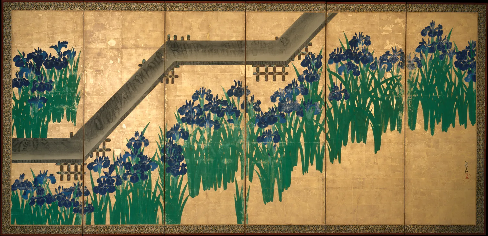
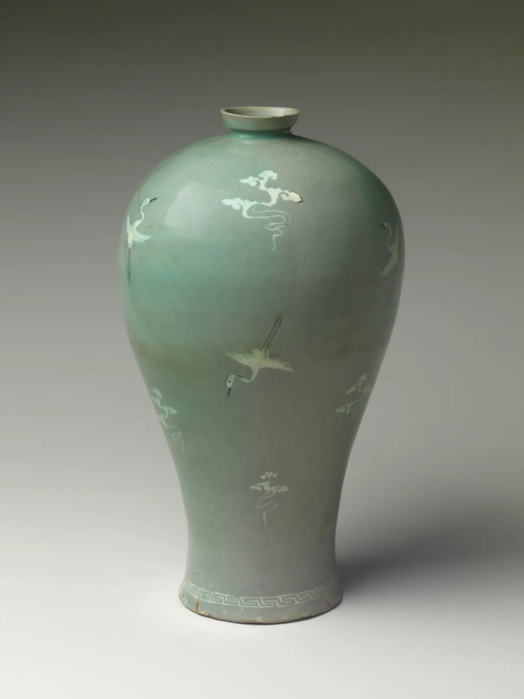

리듬과 반복
가로수 길을 걸으면 나무가 일정한 간격으로 지나가며 걸음에 박자를 준다. 횡단보도의 흰 줄, 한옥 지붕의 기와 끝, 서가에 꽂힌 책등도 그렇다. 같은 것이 여러 번 놓이면 눈은 그 사이의 간격을 세기 시작하고, 간격이 고르면 차분한 박자를, 점점 좁아지면 빨라지는 박자를 느낀다. 그런데 모든 것이 똑같이 반복되면 금방 지루해지고, 무엇 하나도 기억에 남지 않는다. 이 장은 반복이 리듬이 되는 조건, 리듬에 변화를 주는 네 가지 방법, 전통 무늬가 반복을 짜는 방식을 직접 만들어 본다. 그리고 그 박자를 일부러 깨뜨리는 한 점이 언제 초점이 되고 언제 소음이 되는지 확인한다.
- 반복이 리듬으로 읽히려면 간격이 어느 정도 고르고, 요소가 서로 닮아야 한다는 것을 확인한다.
- 반복, 교대, 점진, 변주를 구별하고 각각이 만드는 박자의 느낌을 비교한다.
- 하나의 단위 무늬를 이동·거울·회전·미끄럼 반사로 늘어놓아 패턴을 만들고, 한국 전통 무늬의 짜임을 읽는다.
- 리듬을 깨는 한 점이 초점이 되는 조건과, 강세가 여러 개가 되면 생기는 일을 구별한다.
- 쇼윈도 진열처럼 실제 공간에서 묶음과 빈 자리로 박자를 설계한다.
반복이 박자가 될 때
아래 그림의 다섯 줄에는 모두 비슷한 막대가 열 개 남짓 놓여 있다. 그런데 줄마다 다른 박자가 들린다. 맨 위 줄은 같은 것을 같은 간격으로 늘어놓았고, 둘째 줄은 두 가지를 번갈아 놓았고, 셋째 줄은 점점 작아지고, 넷째 줄은 같은 틀 안에서 조금씩 다르고, 마지막 줄은 간격이 제멋대로다.
같은 요소를 여러 번 놓는 것을 반복(Repetition)이라 하고, 반복이 만드는 규칙적인 흐름, 곧 눈이 따라가며 "다음"을 예상하게 되는 박자를 리듬(Rhythm)이라고 한다. 음악의 리듬이 소리와 쉼의 길이로 정해지듯, 화면의 리듬은 요소와 간격(Interval)으로 정해진다. 바우하우스에서 가르친 화가 파울 클레(Paul Klee, 1879–1940)는 바이올린을 연주하던 사람답게 음악의 박자와 강약을 화면 구성에 빗대어 강의했고, 그 강의 노트 일부가 『교육 스케치북』(Pädagogisches Skizzenbuch, 1925)으로 출간되었다.
리듬이 생기려면 두 가지가 필요하다. 요소들이 서로 닮아 하나의 무리로 묶여야 하고(4장의 유사성), 간격이 어느 정도 고르게 반복되어야 한다. 둘 중 하나가 무너지면 박자는 들리지 않는다. 그림 1의 마지막 줄이 그렇다. 막대는 닮았지만 간격이 들쭉날쭉해서, 눈은 다음 막대가 어디 올지 짐작할 수 없다.
간격이 박자를 정한다
먼저 가장 단순한 반복, 같은 막대를 한 줄로 세운 울타리에서 시작한다. 간격을 넓히고 좁히면서, 그리고 간격에 불규칙함을 조금씩 섞으면서 박자가 어떻게 바뀌는지 본다. 막대 하나를 직접 끌어 옮겨 볼 수도 있다. 아래 띠는 막대 사이 간격을 음표처럼 늘어놓은 "박자표"다.
울타리의 박자
반복의 고르기를 숫자로 말하고 싶으면 간격의 변동계수(Coefficient of variation)를 쓸 수 있다. 간격들이 평균에서 얼마나 흩어져 있는지를 평균에 대한 비율로 나타낸 값이다.
시뮬레이터에서 본 대로, 완벽한 반복과 무질서 사이에는 넓은 중간 지대가 있다. 손으로 쌓은 돌담, 사람이 심은 가로수, 붓으로 그은 줄무늬는 모두 이 지대에 있다. 기계가 찍은 반복보다 이쪽이 더 오래 보아도 지루하지 않은 이유는, 눈이 박자를 예상하면서도 매번 작은 차이를 발견하기 때문이다. 반대로 고른 박자 속의 단 하나의 어긋남은, 인쇄물의 잘못 정렬된 글자 하나처럼 크게 눈에 띈다. 7장에서 조금 깨진 대칭이 실수로 읽힌 것과 같은 원리다.
교대: 두 박자, 세 박자
두 가지 이상의 요소를 정해진 순서로 번갈아 놓는 것을 교대(Alternation)라고 한다. 기둥과 창, 굵은 줄과 가는 줄, 세운 책과 눕힌 책. 음악에서 "강–약"이 2박자, "강–약–약"이 3박자인 것처럼, 화면에서도 "A B"와 "A A B"는 다른 박자로 들린다. 아래 띠의 칸을 눌러 A, B, 빈칸을 바꿔 가며 박자를 직접 짜 본다. 짠 박자는 아래쪽에 넓은 띠 무늬로 이어서 보여 준다.
교대로 박자 짜기
교대가 읽히려면 A와 B가 적당히 달라야 한다. 너무 비슷하면 교대가 사라지고, 너무 다르면 두 가지가 한 줄을 이룬다기보다 서로 다른 두 무리가 섞인 것처럼 보인다. 건축의 정면이 좋은 예다. 기둥과 창, 벽과 문이 번갈아 나오면서도, 같은 재료와 같은 높이선이 둘을 한 정면으로 묶는다. 한옥의 창호에서는 창살의 굵기와 간격, 문짝과 벽의 교대가 집 전체의 박자를 만든다.
점진: 빨라지고 멀어지는 박자
요소의 크기, 간격, 명도 같은 성질 하나가 한 방향으로 조금씩 바뀌며 이어지는 것을 점진(Progression, Gradation)이라고 한다. 음악의 크레셴도나 아첼레란도처럼, 점진은 정지한 반복에 방향을 준다. 그리고 크기와 간격이 함께 일정한 비율로 줄어들면, 눈은 그것을 같은 물체들이 멀어지는 줄로 읽는다. 6장의 크기 원근이 바로 이 점진이다.
점진의 비율
점진은 반복과 변화 사이에서 균형을 잡는 가장 쉬운 방법이다. 이웃한 두 요소는 거의 같아 박자가 이어지지만, 처음과 끝은 분명히 다르다. 포스터에서 같은 단어를 크기를 줄이며 반복하거나, 웹 화면에서 목록의 글자색을 점점 옅게 하는 것도 점진이다. 다만 걸음이 너무 크면 이웃이 서로 닮지 않아 줄이 끊어진다. 시뮬레이터에서 비율 0.86과 0.70의 차이가 그것이다.
변주: 같은 틀, 다른 얼굴
변주(Variation)는 반복의 틀(크기, 간격, 방향)은 지키면서 요소의 세부를 하나하나 다르게 하는 것이다. 음악에서 같은 선율을 조금씩 바꿔 되풀이하는 변주곡처럼, 눈은 공통의 틀을 알아보면서 매번 다른 얼굴을 즐긴다. 자연이 만드는 반복은 거의 모두 변주다. 같은 종류의 나뭇잎, 꽃무리, 파도는 닮았지만 똑같지 않다.

고린의 병풍에서 붓꽃은 반복이고, 무리의 크기와 높이는 변주이고, 다리는 리듬을 가로지르는 다른 박자다. 꽃무리는 화면의 아래와 위를 번갈아 차지하며 교대를 이루기도 한다. 한 화면 안에 이 장의 여러 리듬이 겹쳐 있는 셈이다. 그리고 흥미롭게도 다리가 꺾이는 각도는 꽃무리의 박자와 맞지 않는다. 같은 박자 위에 엇박자를 하나 올려, 장식적인 반복이 단조로워지는 것을 막는다.
패턴: 단위 하나로 면을 채우기
반복이 한 줄을 넘어 면 전체로 퍼지면 패턴(Pattern), 곧 무늬가 된다. 무늬는 하나의 단위 무늬(Motif)를 정해진 규칙으로 늘어놓아 만든다. 규칙은 크게 네 가지다. 그대로 옮기는 이동, 거울에 비춘 듯 뒤집는 거울, 돌리는 회전, 그리고 옮기면서 뒤집는 미끄럼 반사. 수학에서는 평면을 채우는 이런 규칙의 조합이 모두 17가지라는 것이 증명되어 있다(벽지군). 아래에서 같은 잎 모양 하나를 네 규칙으로 늘어놓아 본다. 왼쪽 위 단위 무늬를 끌면 잎이 돌아간다.
단위 무늬로 면 채우기
한국 전통 무늬도 이 규칙들로 읽을 수 있다. 아래 그림은 흔히 쓰이는 네 가지를 이 책이 단순하게 다시 그린 것이다. 실제 유물의 무늬는 시대와 지역, 장인에 따라 비례와 선의 굵기가 크게 다르므로 이 그림은 짜임만 보여 준다.

그림 4의 매병은 무늬를 쓰는 오래된 지혜를 보여 준다. 엄격한 반복은 가장자리를 묶는 데, 느슨한 반복은 넓은 면에 숨을 주는 데 쓴다. 단청이 들보의 양 끝에는 촘촘한 무늬를 두고 가운데는 비워 두거나 큰 무늬 하나를 두는 것, 책의 표지가 가장자리에 반복 띠를 두르는 것도 같은 생각이다. 조각보처럼 크기가 제각각인 조각을 이어 붙인 경우는 반대다. 반복 단위는 없지만 비슷한 크기와 색의 조각들이 고루 퍼져 "불규칙한 리듬"을 만든다. 규칙적인 반복만이 리듬은 아니다.
리듬을 깨는 한 점
고른 반복은 배경이 된다. 그리고 배경이 고를수록, 그 박자를 깨는 하나는 강하게 드러난다. 회색 우산들 사이의 빨간 우산 하나, 같은 표지 사이의 다른 표지 하나. 이렇게 리듬 속에서 하나만 다르게 하여 눈길을 모으는 것을 강세(Accent)라고 한다. 지각 심리학에서는 주변과 다른 하나가 저절로 눈에 띄는 현상을 "튀어나옴"(Pop-out)이라고 부르며, 색이나 방향처럼 단순한 성질 하나가 다를 때 특히 빠르게 찾아진다고 보고되어 왔다. 아래 줄의 칸을 눌러 강세를 놓고, 강세의 세기와 개수를 바꿔 본다.
박자를 깨는 강세
강세는 하나일 때 가장 강하다. 둘이면 다투고, 고르게 셋 이상이면 새 리듬이 되고, 흩어진 여럿이면 소음이 된다. 그래서 디자이너들 사이에는 "강조는 한 화면에 하나"라는 말이 오래 전해져 왔다. 이것은 법칙이라기보다 경험칙이지만, 시뮬레이터의 단순한 모형만으로도 이유를 짐작할 수 있다. 눈길은 무한하지 않고, 강세가 늘어날수록 하나하나의 몫은 줄어든다. 강세를 어디에 둘지도 중요하다. 줄의 정가운데에 두면 대칭에 가까운 정적인 초점이 되고, 끝에 두면 놓치기 쉽고, 가운데에서 조금 비켜 두면 박자 안에서 움직임이 생긴다. 이것은 7장의 무게와 5장의 시선이 함께 정한다.
쇼윈도의 박자
이 장의 도구를 실제 진열에 모은다. 폭 2.4 m의 쇼윈도에 책 21권을 늘어놓는다. 패턴을 바꿔 가며 박자를 짜고, 묶음 사이 빈 자리의 넓이를 정한 뒤, 빨간 표지 한 권을 끌어 어디에 둘지 고른다. "멀리서 보기"는 길 건너편에서 본 것처럼 진열을 흐린 실루엣으로 바꾼다.
쇼윈도 진열의 박자
진열에서 박자를 만드는 가장 강력한 도구는 책 자체가 아니라 빈 자리다. 21권을 고르게 늘어놓으면 반복은 완벽하지만 멀리서는 한 줄의 띠일 뿐이다. 빈 자리 두 곳을 만들면 띠가 세 묶음으로 끊기고, 길 건너편에서도 "하나, 둘, 셋"이 읽힌다. 그 위에 교대와 점진을 얹으면 가까이 다가온 사람에게는 묶음 안의 작은 박자가 보인다. 멀리서는 큰 박자, 가까이서는 작은 박자. 음악에서 마디와 박이 겹쳐 있는 것과 닮았다.
서윤의 겨울 작업 노트
빨간 책 한 권의 자리
벽에 수채화 세 점을 건 다음 날, 서윤은 다시 쇼윈도 앞에 섰다. 6장에서 앞·중간·뒤 세 켜를 정해 깊이는 생겼지만, 창 앞을 지나가며 보면 책들은 여전히 같은 크기, 같은 간격으로 늘어서 있었다. 1장의 스무 권에 낭독회 책 한 권을 더해 21권이 된 책을 한 줄로 고르게 세워 이 장의 모형으로 재면, 책 사이 간격의 변동계수가 0인, 1장의 첫 진열과 같은 자로 잰 반복이었다. 주인의 말이 떠올랐다. "겨울에는 창 앞에서 사람들이 멈춰 섰으면 좋겠다." 멈추게 하려면 박자가 필요했다.
도경은 서가에서 책 한 권을 빼 들고 음악 이야기를 꺼냈다. "같은 음을 스물한 번 치면 그건 리듬이 아니라 시계 소리야. 마디를 끊어야 들려." 두 사람은 3장에서 정해 둔 읽히는 빈 자리 두 곳을 마디의 끊김으로 쓰기로 했다. 책을 5권, 11권, 5권의 세 묶음으로 나누고, 양쪽 묶음은 세운 표지와 책등을 번갈아(표지·책등·표지·책등·표지), 가운데 묶음은 받침대 높이를 조금씩 달리해 가운데로 갈수록 높아지게(가장 높은 책이 양 끝보다 약 1.45배) 놓았다. 멀리서는 세 박자, 가까이서는 묶음 안의 교대와 점진이 보이는 진열이다.
빈 자리 넓이는 시뮬레이터로 몇 가지를 비교했다. 책 폭의 1.5배면 빈 자리가 창 폭에 맞춰 약 13.8 cm, 2배면 17.7 cm, 2.5배면 21.2 cm였다(모델은 표지 폭을 같게 단순화했다). 1.5배는 길 건너편 사진에서 묶음이 다시 붙어 보였고, 2.5배는 가운데 묶음이 섬처럼 떨어졌다. 서윤은 2배를 골랐다.
마지막으로 빨간 표지(#d24f39) 한 권. 나머지 표지는 모두 책방 E의 차분한 색 계열이라 OKLCH 채도가 0.045를 넘지 않는데, 빨간 표지는 0.170으로 홀로 선명하다. 이 장의 색 차이로 재면 가장 가까운 표지와도 ΔE2000 25.2만큼 떨어져 있다. 서윤은 처음에 빨간 책을 가운데 봉우리(창의 정가운데)에 올렸다. 도경은 "그러면 진열이 제단처럼 보여"라고 했다. 정가운데의 강세는 대칭을 완성할 뿐 박자를 깨지 않는다. 묶음 끝에 두니 빈 자리와 겹쳐 강세가 흐려졌다. 두 사람은 가운데 묶음의 봉우리에서 오른쪽으로 두 권 옮긴 자리, 왼쪽부터 13번째 책을 골랐다. 창 왼쪽 끝에서 약 140 cm(창 폭의 58.5%)로, 가운데에서 조금 비켜 박자 안에 걸음을 하나 더 넣는 자리다.
웹사이트의 신간 목록에도 같은 생각을 옮겼다. 같은 크기의 표지 카드가 끝없이 이어지던 목록을 4권씩 한 줄로 묶고, 두 줄(8권)마다 "이달의 책" 한 권을 넓은 띠로 넣어 박자를 끊기로 했다. 띠의 정확한 격자와 간격은 12장에서 지면 전체와 함께 정한다.
| 안 | 박자 | 빈 자리(모델) | 빨간 책 | 읽힘 |
|---|---|---|---|---|
| 고른 줄(1장의 첫 진열 방식) | 21권 고르게(간격 CV 0) | 없음 | 없음 | 멀리서 한 줄의 띠 |
| 세 묶음 | 5 · 11 · 5권, 빈 자리 책 폭의 1.5배 | 13.8 cm | — | 멀리서 묶음이 붙어 보임 |
| 결정안 | 5 · 11 · 5권, 양쪽 교대 + 가운데 점진, 빈 자리 2배 | 17.7 cm | 13번째, 창 왼쪽에서 약 140 cm(58.5%) | 세 박자 + 비켜 놓은 강세 |
| 비교 | 같은 박자, 빨간 책을 정가운데(11번째)에 | 17.7 cm | 창 가운데(50%) | 정적, 제단 같다 |
핵심 정리
- 반복은 같은 요소를 여러 번 놓는 것이고, 리듬은 그 반복이 만드는 예상 가능한 박자다. 리듬이 생기려면 요소가 서로 닮고 간격이 어느 정도 고르게 되풀이되어야 한다.
- 간격의 고르기는 변동계수로 잴 수 있다. 자로 잰 반복과 무질서 사이의 넓은 중간 지대(손으로 만든 반복)가 오래 보아도 지루하지 않다. 고른 박자 속의 작은 어긋남 하나는 실수처럼 크게 보인다.
- 교대는 두 가지 이상을 순서대로 번갈아 두어 2박자, 3박자를 만든다. A와 B는 구별될 만큼 다르고, 한 줄로 묶일 만큼 닮아야 한다. 빈칸도 박자다.
- 점진은 크기·간격·명도 하나를 한 방향으로 조금씩 바꿔 박자에 방향을 준다. 크기와 간격이 함께 줄면 깊이로 읽히고, 걸음이 너무 크면 줄이 끊긴다. 변주는 틀을 지키며 세부를 바꾼다.
- 패턴은 단위 무늬를 이동·거울·회전·미끄럼 반사로 늘어놓아 만든다. 전통 무늬는 엄격한 반복으로 가장자리를 묶고, 느슨한 반복으로 넓은 면에 숨을 준다.
- 리듬을 깨는 강세는 하나일 때 가장 강하다. 둘이면 다투고, 고르게 여럿이면 새 박자가 되고, 흩어진 여럿이면 소음이 된다. 실제 공간의 박자는 요소보다 빈 자리로 먼저 만든다.
확인 퀴즈
1. 같은 모양의 화분 열두 개를 창가에 놓았는데 간격이 제각각이라 어수선해 보인다. 리듬을 살리는 방법으로 가장 알맞은 것은?
2. 기둥이 오른쪽으로 갈수록 일정한 비율로 작아지고 간격도 함께 좁아지는 그림이 있다. 이 그림이 주는 느낌에 대한 설명으로 가장 알맞은 것은?
3. 같은 잎 모양 하나로 무늬를 만들 때, 이웃한 잎들이 서로 마주 보며 짝을 이루게 하려면 어떤 규칙을 써야 하는가?
4. 같은 크기의 회색 표지 15권 사이에 빨간 표지를 3권 같은 간격(5칸마다)으로 넣었더니 "강조"가 잘 되지 않는다. 가장 알맞은 설명은?